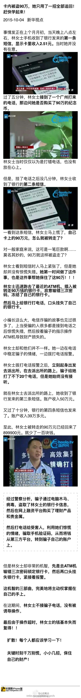

最近看的TPP的解释中，这篇正能量较足。对一些对TPP较悲观的移民换人民币的建议，我只能说，自己不可能靠赌国运衰微而发达。而且历史经验表明，中国的民族情绪倾向也会导致政策不会向国际压力屈服。我的赌注还是放在GCD上。 TPP要封锁孤立中国经济？你需要知道的几个真相
//@舒服自由人:凡是执行需要道德高尚、高度自觉，跟共产主义差不多的那些联盟和规则，你都可以看成是骗小孩或傻帽的。很多国家内部自己同族，不同宗教的都能开干，你让他遵守某个条文，有钱不赚，各国政客什么时候那么天真了。以前中国是自己封闭自己那没法子，现在的资本世界会主动跟钱作对？@舒服自由人:#TPP谈判# 这跟平时在股票吧看到的，号召散户们“联合起来，套死庄家”差不多傻帽，只有名义上的激情，不可能实现——在利益面前谁能保证那么多成员一条心干到底。我怎知你私下有没跟封锁对象又有其他台底交易，我怎知你会不会提前出货跑了，留下我一个扛棺材？大家都是圣人言出必行？那世界早没战争了
//@广州公安:具体流程：1.事主个人信息泄露(网银账号和密码被盗用) 2.骗子登录事主的网银进行理财操作,资金进入理财帐户；3.骗子冒充工作人员联系事主，企图套取交易验证码，如果事主给骗子提供了验证码，那么钱就真的没了。所以关键在“验证码”！ 切记：不泄露验证码！立即报警，联系正规客服！@公安部刑侦局:【卡内被盗90万，她只用了一招全部追回！赶快学起来！】 